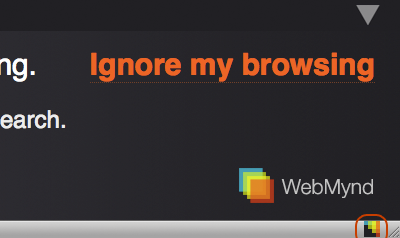

You can control history by clicking the WebMynd icon in the status bar in the bottom right of your browser window. If you don't see any WebMynd tools in the status bar, check your WebMynd settings (in the Firefox menu under "Tools") to make sure history is enabled. If your status bar isn't visible, you can enable it under Firefox's "View" menu.
There are four different browsing modes:
|
You're saving and indexing the pages you're currently browsing. |
 |
You're not saving any pages. |
|
You're not saving and indexing the page you're on because you've blocked the recording of that page or site. |
|
You're not saving and indexing the page you're on because it's a secure HTTPS page. WebMynd never records HTTPS pages. |